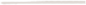

 charlesboury.fr
graphisme & interactivité
Objectif :
Créer des jeux et des images attractives
pour comprendre et manipuler des systèmes complexes.
Expériences Pro
Jeux mathématiques sur mobile
J'ai appris à intéresser les enfants en associant fun et apprentissage.
Réalisation de nombreux jeux et prototypes pour apprendre l'algèbre, l'arithmétique, la rigueur, l'autonomie.
What I did : maquettes interactives illustrations interfaces animations logos sites web trailers

App pour une série d'anticipation
J'ai développé un jeu test-scolaire auquel une petite fille doit jouer
dans la série TV retro-futuriste Trepalium.
What I did : tout
Serious Game sur les éoliennes
J'ai travaillé avec des chercheurs sur un point-and-clic et des mini-jeux
sur PC, et animé des conférences autour de nos découvertes sur le
serious game.
What I did : interfaces level design caméras
Illustrations de projets de paysagisme
J'ai illustré plusieurs projets de paysagisme, soit pour communiquer,
soit pour exposer l’état du projet et prendre des décisions.
What I did : perspectives schémas animés plans
Etudes
BAC
Arts Appliqués
Toulouse
BTS
Design d'Espace
Ecole Boulle - Paris
LICENCE PRO
Game Design
Université Paris 13
Extras
48h pour faire un jeu
J'ai fait un jeu flash seul, pour la Ludum Dare.
Première expérience de programmation.
Un autre en équipe, pour apprendre à compter en binaire.
Maintenant je sais !
Un dernier, qui combine survie et bandit manchot.
Fait dans un bar.
boury.charlesgmail.com